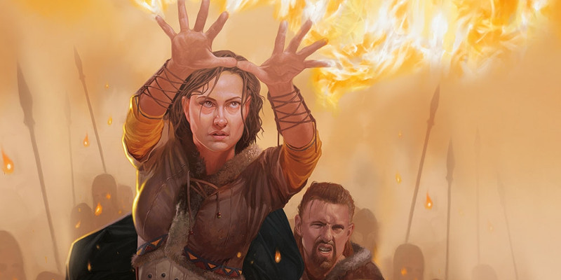

Fiélons
Ce document présente de nouvelles options pour les tieffelins, les cultes diaboliques et les faveurs démoniaques.
Sous-races tieffelines
Si votre MD le permet, vous pouvez créer un tieffelin dont l'ascendance infernale établit un lien spécial avec un Seigneur des Neuf enfers. Ce lien est représenté par une sous-race.
Traits
Si votre tieffelin a une sous-race, choisissez l'une des options suivantes, correspondant à l'être diabolique relié à l'ascendance de votre personnage. Les traits de la sous-race choisie remplacent l'Augmentation de caractéristiques et l'Ascendance infernale indiquée dans le Manuel des Joueurs. Il y a cependant une exception : les tieffelins connectés à Asmodée. Ceux-là utilisent les traits indiqués dans le Manuel des Joueurs.
Asmodée
Les tieffelins connectés à Nessus commandent la puissance du feu et des ténèbres, guidés par une intelligence plus fine que la moyenne, comme il sied à ceux reliés à Asmodée lui-même. De tels tieffelins utilisent les Augmentations de caractéristiques et l'Ascendance infernale indiquée dans le Manuel des Joueurs.
Belzébuth
Le royaume en ruines de Maladomini est gouverné par Belzébuth, qui excelle dans la corruption de ceux dont les péchés mineurs peuvent être transformés en actes de damnation. Les tieffelins reliés à cette strate peuvent corrompre les autres, tant sur le plan physique que psychique.
Augmentation de caractéristiques. Votre Charisme augmente de 2, et votre Intelligence augmente de 1.
Ascendance de Maladomini. Vous connaissez le sort mineur thaumaturgie. Au niveau 3, vous pouvez lancer rayon empoisonné comme sort de niveau 2 une fois avec ce trait, et récupérez cette capacité lorsque vous terminez un repos long. Au niveau 5, vous pouvez lancer couronne du dément une fois avec ce trait, et récupérez cette capacité lorsque vous terminez un repos long. Le Charisme est votre caractéristique d'incantation pour ces sorts.
Dispater
La grande cité de Dis occupe la majeure partie de la deuxième strate des enfers. C'est un endroit où les secrets sont dévoilés et partagés au plus offrant, faisant des tieffelins reliés à Dispater d'excellents espions et infiltrés.
Augmentation de caractéristiques. Votre Charisme augmente de 2, et votre Dextérité augmente de 1.
Ascendance de Dis. Vous connaissez le sort mineur thaumaturgie. Au niveau 3, vous pouvez lancer déguisement une fois avec ce trait, et récupérez cette capacité lorsque vous terminez un repos long. Au niveau 5, vous pouvez lancer invisibilité une fois avec ce trait, et récupérez cette capacité lorsque vous terminez un repos long. Le Charisme est votre caractéristique d'incantation pour ces sorts.
Fierna
En tant que maîtresse de la manipulation, Fierna accorde aux tieffelins qui lui sont reliés de fortes personnalités.
Augmentation de caractéristiques. Votre Charisme augmente de 2, et votre Sagesse augmente de 1.
Ascendance de Phlegethos. Vous connaissez le sort mineur amis. Au niveau 3, vous pouvez lancer charme-personne comme un sort de niveau 2 une fois avec ce trait, et récupérez cette capacité lorsque vous terminez un repos long. Au niveau 5, vous pouvez lancer suggestion une fois avec ce trait, et récupérez cette capacité lorsque vous terminez un repos long. Le Charisme est votre caractéristique d'incantation pour ces sorts.
Glasya
Glasya, génie criminel des enfers, accorde à ses tieffelins une magie leur donnant la capacité de commettre des vols en tout genre.
Augmentation de caractéristiques. Votre Charisme augmente de 2, et votre Dextérité augmente de 1.
Ascendance de Malbolge. Vous connaissez le sort mineur illusion mineure. Au niveau 3, vous pouvez lancer déguisement une fois avec ce trait, et récupérez cette capacité lorsque vous terminez un repos long. Au niveau 5, vous pouvez lancer invisibilité une fois avec ce trait, et récupérez cette capacité lorsque vous terminez un repos long. Le Charisme est votre caractéristique d'incantation pour ces sorts.
Levistus
La cité des glaces de Stygia est gouvernée par Levistus, un archidiable connu pour offrir un marché à ceux qui font face à un destin funeste et inéluctable.
Augmentation de caractéristiques. Votre Charisme augmente de 2, et votre Constitution augmente de 1.
Ascendance de Stygia. Vous connaissez le sort mineur rayon de froid. Au niveau 3, vous pouvez lancer armure d‘Agathys comme un sort de niveau 2 une fois avec ce trait, et récupérez cette capacité lorsque vous terminez un repos long. Au niveau 5, vous pouvez lancer ténèbres une fois avec ce trait, et récupérez cette capacité lorsque vous terminez un repos long. Le Charisme est votre caractéristique d'incantation pour ces sorts.
Mammon
Mammon l'avare aime les pièces de monnaie par dessus tout. Les tieffelins qui lui sont reliés excellent à rassembler et à sauvegarder des richesses.
Augmentation de caractéristiques. Votre Charisme augmente de 2, et votre Intelligence augmente de 1.
Ascendance de Minauros. Vous connaissez le sort mineur main de mage. Au niveau 3, vous pouvez lancer disque flottant de Tenser une fois avec ce trait, et récupérez cette capacité lorsque vous terminez un repos court ou long. Au niveau 5, vous pouvez lancer verrou magique une fois avec ce trait, sans composantes matérielles, et récupérez cette capacité lorsque vous terminez un repos long. Le Charisme est votre caractéristique d'incantation pour ces sorts.
Méphistophélès
Au royaume des glaces de Cania, Méphistophélès offre la puissance arcanique à ceux qui l'en implorent. Les tieffelins reliés à lui maîtrisent la magie des arcanes.
Augmentation de caractéristiques. Votre Charisme augmente de 2, et votre Intelligence augmente de 1.
Ascendance de Cania. Vous connaissez le sort mineur main de mage. Au niveau 3, vous pouvez lancer missile magique comme un sort de niveau 2 une fois avec ce trait, et récupérez cette capacité lorsque vous terminez un repos long. Au niveau 5, vous pouvez lancer toile d'araignée une fois avec ce trait, et récupérez cette capacité lorsque vous terminez un repos long. Le Charisme est votre caractéristique d'incantation pour ces sorts.
Zariel
Les tieffelins reliés à Zariel sont plus forts que la moyenne et reçoivent des aptitudes magiques qui les aident dans la bataille.
Augmentation de caractéristiques. Votre Charisme augmente de 2, et votre Force augmente de 1.
Ascendance d'Avernus. Vous connaissez le sort mineur thaumaturgie. Au niveau 3, vous pouvez lancer châtiment calcinant comme un sort de niveau 2 une fois avec ce trait, et récupérez cette capacité lorsque vous terminez un repos long. Au niveau 5, vous pouvez lancer châtiment révélateur une fois avec ce trait, et récupérez cette capacité lorsque vous terminez un repos long. Le Charisme est votre caractéristique d'incantation pour ces sorts.
Cultes diaboliques
POURQUOI LES DIABLES ONT BESOIN DE CULTES
Malgré leur puissance, la plupart des diables sont piégés dans les Neuf enfers. Alors que d'autres créatures planaires utilisent la magie pour se déplacer d'un plan à un autre à volonté, les diables ont besoin d'un portail qu'ils doivent franchir physiquement ou d'une invocation lancée par une entité située sur un plan éloigné. Ils ont donc peu d'influence sur leur destination. C'est pour cette raison que, sur le plan matériel, la plupart des diables travaillent au travers de cultes, lesquels sont généralement composés de personnes qui ont utilisé des rituels pour entrer en contact avec des diables et qui leurs ont offert leur âme en échange de pouvoir.
Les Seigneurs des Neuf gèrent la majeure partie du commerce des âmes, et les dons qu'ils peuvent offrir sont déterminés par les décrets d'Asmodée.
Les cultes dédiés aux être infernaux sont les ennemis des aventuriers à travers le multivers de D&D. Cette section propose aux MD plusieurs façons de modifier les cultes dédiés aux puissances des Neuf enfers. Chaque archidiable attire un certain type de personnalité déterminé par ce que le diable a à offrir. Dans les descriptions qui suivent, des blocs de statistiques issus du Manuel des Monstres sont suggérés sous la forme de Cultistes type afin de vous aider à interpréter ces personnages. Chaque description inclut aussi une liste de sorts associés au culte en question. Si un cultiste peut lancer des sorts, vous pouvez remplacer ces sorts par ceux provenant de cette liste pour autant qu'ils soient de même niveau.
Culte d'Asmodée
Asmodée exige la loyauté de tous les cultistes qui montent en grade et en puissance dans les différents cultes des Neuf. Son culte domine tous les autres. Tous les PNJ qui sont à la tête d'un culte diabolique doivent aussi reconnaître la puissance d'Asmodée. En retour, le cultiste le plus compétent et le plus méritant gagne le trait Exigence de Nessus.
Exigence de Nessus. Au début de chaque tour de la créature, celle-ci peut choisir un allié qu'elle peut voir à 9 mètres ou moins. L'allié choisi perd 10 points de vie, et la créature regagne ce nombre de points de vie. Si la créature est incapable d'agir, elle ne choisit pas : c'est l'allié le plus proche à 9 mètres ou moins qui est choisi.
Culte de Belzébuth
Buts : rétablir l'honneur et le respect au prix de ceux qui l'ont volé.
Cultistes type : un PNJ ou un monstre qui a souffert d'une disgrâce.
Sorts de culte : illusion mineure (sort mineur), déguisement (niveau 1), force phantasmagorique (niveau 2), image majeure (niveau 3)
Belzébuth recrute des individus plutôt que des cultes. Il offre l'espoir à ceux qui cherchent la rédemption après leurs échecs. Belzébuth augmente parfois le Charisme de ceux qui le suivent. Il octroient aussi une faveur, le trait Chemin de Belzébuth, qui permet à un cultiste favori de profiter de l'échec d'un allié.
Chemin de Belzébuth. En tant qu'action bonus à son tour, la créature peut choisir un allié qu'elle peut voir à 9 mètres ou moins d'elle. Jusqu'au début de son prochain tour, la créature gagne un avantage aux jets de caractéristique et aux jets d'attaque, alors que l'allié choisi a un désavantage aux jets de caractéristique, d'attaque et de sauvegarde.
Culte de Dispater
Buts : utiliser en secret les pouvoirs obtenus, exercer de l'influence par le chantage, contrôler des individus et des organisations en utilisant leurs faiblesses et leurs hontes.
Cultistes type : acolyte, bandit, bandit/capitaine, fanatique, cultiste, mage, noble, espion.
Sorts de culte : assistance (sort mineur), identification (niveau 1), voir l'invisible (niveau 2), clairvoyance (niveau 3)
Dispater marchande les secrets, les offrant en échange de l'âme d'une créature. Son culte échange les secrets de créatures en échange d'informations. Il est souvent à l'origine de conspirations dont le but est de renverser ou de remplacer des gouvernements ou des ordres religieux. Des flagelleurs mentaux renégats concluent parfois des pactes avec Dispater dans le but de se procurer les secrets nécessaires afin d'échapper à jamais de la domination de Morkoth. Les cultistes peuvent obtenir le trait Perspicacité infernale. Leurs leaders peuvent aussi posséder le trait Évasion contrariante.
Perspicacité infernale (Recharge après un repos court ou long). En tant qu'action bonus, la créature gagne un avantage pour ses jets de caractéristique et ses jets d'attaque effectués jusqu'à la fin du tour en cours.
Évasion contrariante (1/jour). En tant que réaction lorsque la créature souffre de dégâts, ceux-ci sont réduits à 0 et elle se téléporte dans un endroit inoccupé situé à 18 mètres maximum de son emplacement.
Culte de Fierna
Buts : contrôler les émotions des autres pour les transformer en marionnettes et en jouets.
Cultiste type : acolyte, archimage, bandit/capitain, fanatique, cultiste, chevalier, noble, prêtre, espion.
Sorts de culte : amis (sort mineur), charme-personne (niveau 1), suggestion (niveau 2), motif hypnotique (niveau 3)
Fierna est maîtresse de la manipulation. Les mortels qui désirent avoir du succès en amour ou qui cherchent à devenir des chefs aimés de tous à la tête d'une bande de fanatiques concluent parfois des pactes avec elle. Fierna accorde des pouvoirs permettant à ses cultistes de manipuler les émotions ; leur Charisme augmente ainsi que leur maîtrise de certaines compétences comme Persuasion ou Intimidation. De plus, les cultistes peuvent obtenir le trait Loyauté infernale et leurs leaders peuvent gagner le trait Loyauté par-delà la mort.
Loyauté infernale. La créature a un avantage aux jets de sauvegarde lorsqu'elle peut voir dans un rayon de 9 mètres une créature possédant le trait Loyauté par-delà la mort.
Loyauté par-delà la mort (Recharge après un repos court ou long). En tant que réaction lorsqu'un allié que cette créature peut voir tombe à 0 point de vie, cet allié ne tombe qu'à 1 point de vie et gagne des points de vie temporaires égaux au Charisme de la créature + la moitié du nombre de ses dés de vie.
Culte de Geryon
Buts : prouesses physiques, dominer les autres par la force, détruire toute opposition.
Cultiste type : bandit, bandit/capitaine, berserker, fanatique, cultiste, gladiateur, malfrat, guerrier tribal, vétéran.
Sorts de culte : gourdin magique (sort mineur), châtiment courroucé (niveau 1), amélioration de caractéristique (niveau 2), aura de vitalité (niveau 3)
Bien qu'il ait été détrôné, Geryon possède encore la capacité de conclure des marchés. Il traite spécialement avec ceux qui recherchent la force brute. Tous les monstres ayant un penchant pour la guerre (comme les orcs, les ogres et les trolls) peuvent être attirés par le culte de Geryon. Les cultistes dévoués à Geryon forment souvent des compagnies de mercenaires ou des groupes de bandits, prouvant leur force en terrassant leurs ennemis lors de batailles et pillant alors ce qu'ils considèrent comme un dû. Geryon accorde à ses fidèles une augmentation de leur Force et de leur Constitution. De plus, les cultistes obtiennent le trait Souffle écrasant et leurs leaders obtiennent aussi le trait Force indomptable.
Souffle écrasant (Recharge après un repos court ou long). En tant qu'action bonus, la créature gagne un bonus à son jet de dégâts pour sa prochaine attaque de corps à corps avec une arme. Le bonus est égal à son modificateur de Force (minimum +1).
Force indomptable (Recharge 5-6). En tant que réaction lorsque la créature subit des dégâts, elle peut lancer 1d10 et soustraire le nombre obtenu de ces dégâts.
Culte de Glasya
Buts : obtenir le pouvoir en retournant un système contre lui-même, s'emparer du pouvoir non seulement de manière irréfutable mais aussi légitimé par un ascendant culturel ou légal.
Cultiste type : bandit, bandit/capitaine, fanatique, cultiste, chevalier, noble, espion, malfrat.
Sorts de culte : amis (sort mineur), charme-personne (niveau 1), invisibilité (niveau 2), hâte (niveau 3)
En tant qu'experte pour découvrir des failles dans les lois et les exploiter à son avantage, Glasya est la patronne des voleurs et d'autres criminels comme les nobles corrompus. Son influence est supposée raffermir les liens familiaux, mais elle a son interprétation personnelle de ce pouvoir et offre des dons pouvant être tournés contre les membres d'une famille. Les gobelins qui prennent le risque de s'insurger contre leurs maîtres hobgobelins signent un pacte avec Glasya, tout comme les kenkus qui forment un gang de criminels. Glasya accorde à ses fidèles une augmentation du Charisme et de la Dextérité. En outre, les cultistes gagnent le trait Un pas dans les ombres et leurs leaders gagnent aussi le trait Anneau infernal de chef.
Un pas dans les ombres (Recharge après un repos court ou long). En tant qu'action, la créature ainsi que tout ce qu'elle porte ou transporte devient invisible jusqu'à la fin de son prochain tour.
Anneau infernal de chef. En tant que réaction lorsque la créature est touchée par un jet d'attaque, elle peut choisir un allié qu'elle peut voir dans un rayon de 1,50 mètre et détourner l'attaque sur cet allié.
Culte de Levistus
Buts : survivre et éventuellement se venger de ceux qui les ont trompés.
Cultiste type : assassin,bandit/capitaine, fanatique, cultiste, mage, noble, espion, malfrat.
Sorts de culte : protection contre les armes (sort mineur), repli expéditif (niveau 1), pattes d'araignées (niveau 2), forme gazeuse (niveau 3)
Levistus ne possède pas de culte au sens traditionnel du terme. À la place, il offre ses faveurs à ceux qui sont désespérés d'échapper à un destin qui semble inévitable. Les drows sont parfois des adorateurs de Levistus lorsque leur société cruelle les place dans des situations auxquelles ils ne peuvent pas échapper. Levistus accorde habituellement à ceux qui lui offrent leur âme une unique chance d'échapper au danger, mais quelques malins concluent un marché avec lui dans l'espoir qu'il les aidera à s'échapper d'un danger futur. Cette faveur prend la forme du trait Chemin de Levistus.
Chemin de Levistus. La créature se téléporte grâce à la magie vers un endroit au choix de Levistus à 1,5 kilomètre maximum de l'endroit où elle se trouve. Cette capacité rétabli en outre tous les points de vie de la créature. Ce trait peut être utilisé en tant qu'action de la créature ou lorsqu'elle est sur le point de mourir. Une fois que la créature a utilisé ce trait, elle ne peut plus l'utiliser une autre fois.
Culte de Mammon
Buts : accumuler des richesses et les mettre à l'abri non seulement pour s'assurer pouvoir et confort mais aussi pour empêcher les autres d'en bénéficier.
Cultiste type : bandit, bandit/capitaine, fanatique, cultiste, noble, espion, malfrat.
Sorts de culte : réparation (sort mineur), disque flottant de Tenser (niveau 1), verrou magique (niveau 2), glyphe de protection (niveau 3)
L'avidité de Mammon est sans égal. Il traite avec les mortels qui désirent la richesse matérielle et leur donne la capacité de répandre cette avidité comme une infection. Les cupides duergars et même quelques dragons sont sensibles aux tentations de Mammon, et les marchands ainsi que les guildes commerciales sont vulnérables aux pactes qu'il propose. Les cultistes de Mammon gagnent le trait Mains saisissantes et leurs leaders gagnent aussi le trait Promesse de richesse.
Mains saisissantes (Recharge après un repos court ou long). En tant qu'action bonus, cette créature fait un jet de Dextérité (Escamotage) contre un jet de Sagesse (Intuition) d'une autre créature qu'elle peut voir dans un rayon de 4,50 mètres autour d'elle. Si cette créature réussit son jet, un objet au choix qu'elle peut voir et qui appartient à la créature ciblée se téléporte par magie dans sa main. L'objet ne peut pas être un objet tenu en main par la cible et doit peser au maximum 5 kg.
Promesse de richesse (Recharge après un repos court ou long). En tant qu'action bonus, la créature choisit une créature qu'elle peut voir. Jusqu'à 5 alliés de son choix sont alors convaincus que la cible transporte de grandes richesses. Jusqu'à la fin du prochain tour de la créature, ces alliés gagnent un avantage pour tous les jets d'attaque contre la cible.
Culte de Méphistophélès
Buts : obtenir la maîtrise et le pouvoir de la magie, couplée à la volonté de l'utiliser pour écraser les rivaux.
Cultiste type : archimage, fanatique, cultiste, mage, prêtre.
Sorts de culte : trait de feu (sort mineur), mains brûlantes (niveau 1), sphère de feu (niveau 2), boule de feu (niveau 3)
En tant que maître des arts arcaniques, Méphistophélès trouve des recrues enthousiastes parmi ceux qui étudient la magie. Tout monstre utilisant des sorts comme les géants de la tempête et les oni sont susceptibles de le suivre, et les guildes de magiciens ainsi que les conclaves de sages sont les plus enclins à subir son influence. Méphistophélès accorde la capacité de lancer des sorts à la plupart de ses suivants. En outre, les cultistes peuvent gagner le trait Protection contre les sorts et leurs leaders le trait Succion de sort.
Protection contre les sorts. La créature gagne un avantage aux jets de sauvegarde contre les sorts. En cas de réussite, elle gagne des points de vie temporaires égaux au niveau du sort.
Succion de sort. En tant qu'action bonus, la créature choisit un allié qu'elle peut voir à 9 mètres d'elle maximum. La cible perd son emplacement de sort de plus bas niveau et la créature le récupère.
Culte de Zariel
Buts : conquérir, obtenir la gloire au combat, et la célébrité et la fortune par la conquête militaire.
Cultiste type : berserker, fanatique, cultiste, gladiateur, garde, chevalier, vétéran.
Sorts de culte : coup au but (sort mineur), héroïsme (niveau 1), arme spirituelle (niveau 2), aura du croisé (niveau 3)
Le culte de Zariel offre un entraînement et des talents martiaux. Il fleurit dans des endroits dévastés par la guerre. Les réfugiés désireux de se battre mais n'ayant aucune expérience sont conduits à Zariel qui peut leur enseigner les compétences nécessaires à leur survie. Des guerriers aguerris cherchant un avantage sont par ailleurs ses plus communes recrues. Les ordres chevaleresques, les guildes de guerriers et les sociétés de mercenaires sont les plus enclines à subir sa domination. Les hobgobelins se tournent parfois vers elle, mais seulement s'ils ont pu fuir l'influence de Maglubiyet et de ses prêtres. Zariel donne à ses suivants la capacité de réaliser des prouesses martiales. Par exemple, un simple paysan peut devenir aussi talentueux qu'un vétéran. En outre, les cultistes gagnent le trait Vague féroce et leurs leaders le trait Tactique infernale.
Vague féroce (Recharge après un repos court ou long). Lorsque la créature touche avec une attaque qui n'est pas un coup critique, elle peut transformer cette attaque en coup critique.
Tactique infernale. Cette créature a l'œil pour saisir un avantage tactique. Immédiatement après avoir déterminé l'initiative, elle peut se choisir ainsi que jusqu'à 3 alliés qu'elle peut voir si elle n'est pas incapable d'agir. Elle peut alors redistribuer les valeurs d'initiative entre ces créatures et elle-même.
Faveurs démoniaques
Les individus mal intentionnés qui tentent d’obtenir des pouvoirs par l’intermédiaire des démons sont dispersés à travers le multivers. Certains se rassemblent en cultes, mais la plupart agissent seuls ou en petits groupes. Et quelle que soit leur organisation, ils sont tous unis par le désir d'obtenir un part du pouvoir du mal infini des Abysses. Ci-après sont passées brièvement en revue les faveurs qu’un MD peut accorder aux monstres et aux PNJ dévoués à un seigneur démon spécifique. Y sont également indiqués les sorts démoniaques associés à chaque seigneur démon. Si le monstre ou le PNJ peut lancer des sorts, vous pouvez remplacer ses sorts par ceux de cette liste, à condition qu’ils soient du même niveau de sort.
Un démon peut transmettre ses faveurs à un nombre de créatures égal à son nombre de dés de vie. Les seigneurs démons ne sont par contre pas limités dans la transmission de leurs faveurs.
Les faveurs démoniaques sont des cadeaux insidieux. Ils font effet aussi longtemps que le démon est satisfait. Accepter une telle faveur est donc un acte de damnation qui corrompt l’âme et conduit l’individu à perpétrer des actes chaotiques, maléfiques et fous. Rejeter une faveur provoque généralement la colère du démon.
Baphomet
Augmentation de caractéristiques : jusqu'à +4 en Force, en Sagesse ou les deux.
Sorts démoniaques : marque du chasseur (niveau 1), sens animal (niveau 2), lenteur (niveau 3)
Baphomet accorde des pouvoirs qui augmentent la force et la ruse. Aux hommes de main, il donne le trait Traqueur infaillible, et aux leaders du culte le trait Inciter à la chasse. Tous les fidèles obtiennent également le trait Mémoire labyrinthique.
Traqueur infaillible. Par une action bonus, la créature crée par magie un lien psychique avec une créature qu’elle peut voir. Pendant la prochaine heure, par une action bonus, la créature connaît la distance et la direction dans laquelle se situe sa cible si elle se trouve sur le même plan d’existence. Le lien prend fin si la créature est incapable d’agir ou si elle utilise cette capacité sur une cible différente.
Inciter à la chasse (Recharge après un repos court ou long). Par une action, la créature permet à tous ses alliés situés dans un rayon de 9 mètres et qui possèdent le trait Traqueur infaillible de faire une attaque avec une arme contre leur cible en tant que réaction.
Mémoire labyrinthique. La créature se souvient à la perfection des chemins qu’elle a empruntés.
Démogorgon
Augmentation de caractéristiques : jusqu'à +4 en Force, en Charisme ou les deux.
Sorts démoniaques : charme-personne (niveau 1), agrandissement/rapetissement (niveau 2), toucher du vampire (niveau 3)
Les fidèles de Démogorgon sont des tueurs solitaires conduits par les murmures de leur maître. Ses serviteurs les plus fidèles gagnent le trait Dédoublement de l’aliéné.
Dédoublement de l’aliéné. La créature à un avantage aux jets de sauvegarde d'Intelligence, de Sagesse et de Charisme.
Fraz-Urb'luu
Augmentation de caractéristiques : jusqu'à +4 en Charisme, en Sagesse ou les deux.
Sorts démoniaques : illusion mineure (sort mineur), déguisement (niveau 1), invisibilité (niveau 2), motif hypnotique (niveau 3)
Maître de la tromperie, Fraz-Urb'luu enseigne à ses initiés les secrets du mensonge et de l’illusion. Ils gagnent aussi le trait Œil du menteur.
Œil du menteur. La créature a un avantage aux jets de Sagesse (Intuition ou Perception). En tant qu’action bonus, elle détecte automatiquement la localisation de toutes les illusions et des créatures qui se cachent dans un rayon de 4,50 mètres autour d'elle.
Graz'zt
Augmentation de caractéristiques : jusqu'à +4 en Constitution, en Charisme ou les deux.
Sorts démoniaques : simulacre de vie (niveau 1), immobilisation de personne (niveau 2), peur (niveau 3)
Graz'zt, le Seigneur des Plaisirs interdits, accorde à ses cultistes la capacité de transformer la plus abominable douleur en plaisir. Ses cultistes gagnent le trait Joie dans la douleur, et les leaders du culte gagnent le trait Maître des plaisirs.
Joie dans la douleur. Dès que la créature subit un coup critique, elle peut faire une attaque de corps à corps avec une arme en tant que réaction.
Maître des plaisirs. En tant que réaction, lorsque cette créature subit des dégâts, elle peut obtenir par magie 5 points de vie temporaires à distribuer entre elle et jusqu’à 3 alliés situés à 9 mètres ou moins d’elle.
Juiblex
Augmentation de caractéristiques : jusqu'à +8 en Constitution, avec un malus identique en Intelligence, Sagesse et Charisme.
Sorts démoniaques : aucun
Les suivants du Seigneur sans visage, Juiblex, sont d’étranges solitaires qui préfèrent la compagnie des êtres visqueux et vaseux. Ils gagnent la robustesse des vases au prix de leurs facultés spirituelles. Les fidèles les moins importants gagnent le trait Mouvement liquide, et ceux les plus dévoués gagnent aussi le trait Organes visqueux.
Mouvement liquide. En tant qu’action, la créature peut se mouvoir jusqu'à 6 mètres à travers des espaces mesurant jusqu'à 2,50 centimètres de diamètre. Elle doit terminer son mouvement dans un espace adapté à sa taille. Si ce n’est pas le cas, elle subit 5 dégâts de force et doit retourner dans l’espace où elle a commencé son mouvement.
Organes visqueux. La créature gagne la résistance aux dégâts contondants, perforants et tranchants d'attaques non magiques. Si elle subit un coup critique ou tombe à 0 point de vie, toutes les créatures dans un rayon de 1,50 mètre subissent des dégâts d'acide égaux au nombre de ses dés de vie.
Orcus
Augmentation de caractéristiques : jusqu'à +4 en Intelligence, en Sagesse ou les deux.
Sorts démoniaques : simulacre de vie (niveau 1), rayon affaiblissant (niveau 2), animation des morts (niveau 3)
Le plus souvent, Orcus transforme ses suivants en morts-vivants comme des goules ou des nécrophages. Parfois, il a besoin que ses fidèles conservent leur forme mortelle afin de mieux infiltrer un royaume ou une cité. Il accorde aux cultistes communs le trait Âme immortelle et aux leaders du culte le trait Aura de mort.
Âme immortelle (Recharge après un repos court ou long). Si la créature tombe à 0 point de vie, elle fait immédiatement un jet de sauvegarde de Constitution DD de 10. En cas de réussite, elle ne tombe qu’à 1 point de vie.
Aura de mort. Une aura mortelle émane de la créature dans un rayon de 9 mètres autour d’elle dans toutes les directions, à condition qu’elle ne soit pas incapable d’agir. L’aura est bloquée par un abris total. La créature et tout allié mort-vivant présent dans l’aura sont immunisés contre la condition effrayé et ont une résistance aux dégâts radiants. Les ennemis présents dans l’aura ont un désavantage aux jets de sauvegarde contre la mort.
Yeenoghu
Augmentation de caractéristiques : jusqu'à +4 en Force et en Dextérité, avec un malus identique en Intelligence et Charisme.
Sorts démoniaques : fou rire de Tasha (niveau 1), couronne du dément (niveau 2), peur (niveau 3)
Les fidèles de Yeenoghu sont des maraudeurs cannibales qui errent en meutes. De jour en jour, ils ressemblent un peu plus aux gnolls dans leur tempérament et leur façon d’agir. Ses suivants les plus dévoués obtiennent l’action optionnelle Mâchoires grinçantes et le trait Saccage. Les leaders du culte obtiennent le trait Assoiffé de sang.
Mâchoires grinçantes. Attaque de mêlée : bonus au toucher égal au bonus de maîtrise de la créature + son modificateur de Force, allonge 1,50 mètre, une cible. Dégâts : 1d4 + modificateur de Force de la créature dégâts perforants.
Saccage. Lorsque la créature fait tomber à 0 point de vie une autre créature avec une attaque au corps à corps lors de son tour, elle peut prendre une action bonus pour se déplacer jusqu'à la moitié de sa vitesse et enchaîner une fois avec son attaque de Mâchoires grinçantes.
Assoiffé de sang. Si cette créature n’est pas incapable d’agir, toute créature dans un rayon de 3 mètres et qui possède le trait Saccage peut utiliser son attaque Mâchoires grinçantes en tant qu’action bonus.
Zuggtmoy
Augmentation de caractéristiques : jusqu'à +4 en Constitution, avec un malus identique en Intelligence, Sagesse et Charisme.
Sorts démoniaques : aucun
Les fidèles de Zuggtmoy sont les victimes décérébrées des étranges spores disséminés par ses progénitures. Les spores creusent à travers le cerveau de leur victime, la transformant en un serviteur fanatique, qui gagne alors le trait Baiser du spore.
Baiser du spore. La créature est immunisée contre les conditions charmé et effrayé. En plus, si ses points de vie sont réduits à 0, chaque créature se situant à 3 mètres ou moins subit des dégâts de poison égaux au nombre de ses dés de vie.
Autres démons
Des démons assez fourbes et puissants peuvent tenter de former leurs propres cultes, s'en servant comme des pions contre leurs ennemis. Un démon peut accorder un trait spécifique à ses fidèles.
Balor
Âme explosive. Cette créature est résistante aux dégâts de feu. Lorsqu'elle meurt, elle explose et chaque créature se trouvant à 3 mètres ou moins subit des dégâts de feu égaux à son nombre de dés de vie.
Goristro
Mémoire labyrinthique. La créature se souvient à la perfection des chemins qu’elle a empruntés.
Marilith
Perfidie du serpent. Cette créature peut utiliser une seconde réaction à chaque round.
Nalfeshnie
Défenses spirituelles. La créature est immunisée à la condition effrayée.

Écrit par Mike Mearls et Jeremy Crawford, traduit par Zoran999